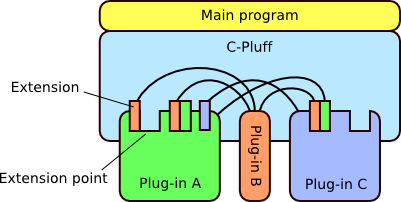

C-Pluff, a plug-in framework for C
Overview
C-Pluff is a plug-in framework for C programs. It has been strongly inspired by the Java plug-in framework in Eclipse. C-Pluff focuses on providing core services for plug-in interaction and plug-in management. It aims to be platform neutral and supports dynamic changes to plug-in configuration without stopping the whole application or framework. It does not yet provide special facilities for distribution such as signed plug-in packages or remote plug-in repositories but it is possible to build such features on top of the current framework.
The current C-Pluff implementation and documentation is very much work in progress so it should be considered early alpha stage software. I will be updating the documentation and source distribution on this site as I proceed with documentation and implementation. If you are interested in C-Pluff, take a look at reference documentation, join mailing lists or download it. You can also send feedback, ideas and thoughts about such platform directly to the author.
Architecture
The plug-in architecture supported by C-Pluff is presented in the following figure. There is a thin main program controlling the plug-in framework. The main program is responsible for initializing and setting up the plug-in environment. Most of the application logic is contained in plug-ins which are independent components and can be developed and distributed separately. Plug-ins integrate with each other by providing extension points and extensions. An extension point is a point into which other plug-ins can attach extensions. An extension can be just information, expressed in XML format, or the plug-in may also provide program logic as part of the plug-in runtime library. The framework provides services for accessing extensions and for managing plug-in dependencies.
